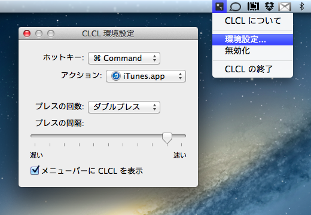

CLCLはMac OS X用のラウンチャアプリケーションです。
修飾キー（Command/Option/Shift/Control/Fn）を素早くダブルプレス（トリプルプレス）することで、登録したアプリケーションを起動もしくはアクティヴ化します。また、登録したURLをディフォルトのウェブブラウザで開いたり、直前にアクティヴだったアプリケーションへ切り替えたりといった動作を行うこともできます。
Lite版は登録できる修飾キーがCommandとOptionに限定されます。

ダウンロード
Gumroad から購入するとダウンロード用 URL が発行されます。購入後に CLCL がアップデートした場合、同じ URL からアップデートヴァージョンがダウンロードできるようになります。
アップデートはこのウェブページと開発者のTwitterアカウントで告知されます。
使用方法
- CLCLを起動
- メニューバーにCLCLのアイコンが現れるので、それをクリック
- メニューから「環境設定...」を選択
- 「ホットキー」からアクションを登録したい修飾キーを選択
- 「アクション」から修飾キーに割り当てるアクションを選択
- 修飾キーをダブルプレス（トリプルプレス）してアクションを実行
- アプリケーションを選択した場合、そのアプリケーションの実行、もしくはアクティヴ化
- URL を設定した場合、ウェブブラウザでそのURLを開く
- 「直前のアプリケーションに戻る」を選択した場合、直前にアクティヴだったアプリケーションの起動、もしくは再アクティヴ化
- 「サイクルアクティベーション」を選択した場合、登録した複数のアプリケーションを、ホットキーを押すたびに順番に起動、もしくはアクティヴ化
ヴァージョン履歴
- ver. 1.2, 2013年1月3日
- メニューバーのアイコンを非表示にする設定項目を追加
- ver. 1.1.1, 2012年2月24日
- アプリケーションがクラッシュしてしまう場合がある問題を修正
- ver. 1.1, 2012年2月4日
- 新しい特殊アクション"サイクルアクティベーション"を追加
- App Sandboxを有効化
- ver. 1.0.1, 2012年1月20日
- Mac OS X 10.6で起動しない問題を修正
- ver. 1.0, 2012年1月18日
- 最初のヴァージョン